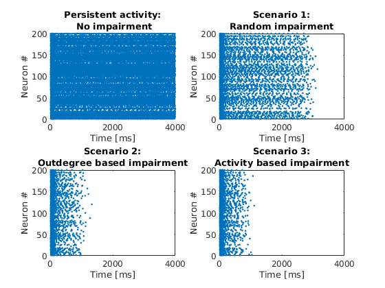

This is the readme for the models associated with the paper
Mirzakhalili E, Gourgou E, Booth V, Epureanu B (2017) Synaptic Impairment and Robustness of Excitatory Neuronal Networks with Different Topologies. Front Neural Circuits 11:38
http://dx.doi.org/10.3389/fncir.2017.00038
This code was contributed by Bogdan Epureanu.
Run the program Results.m with MATLAB.
After a minute the following figures similar to
figure 4 in the paper are generated:
